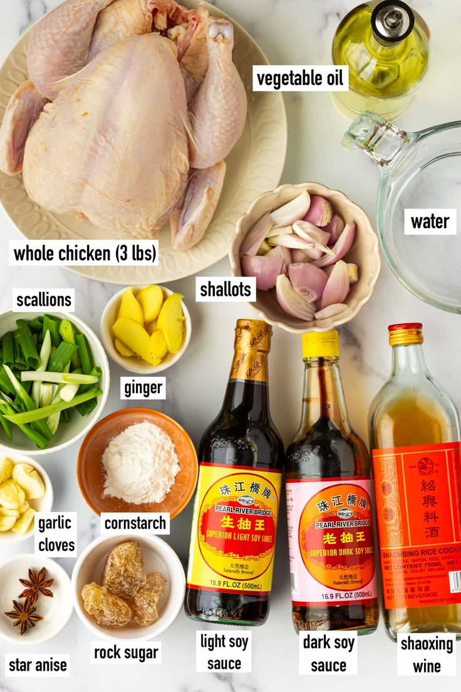

Hainan Chicken Rice
Hainan Chicken Rice is a popular dish originally from Hainan, China, and is widely loved across many Asian countries. This dish is known for its tender chicken, fragrant rice, and flavorful sauces.
- • Main ingredients: whole chicken, ginger, garlic, scallions, and soy sauce.
- • Cooked using simple techniques to create rich and comforting flavors.
- • Served with warm rice, soup, and special homemade sauces.
Cooking Tutorial
First, the chicken is boiled with ginger and scallions until tender. The broth is then used to cook the rice for extra flavor. After that, the chicken is sliced and served with soy sauce, garlic sauce, and chili sauce.
Back